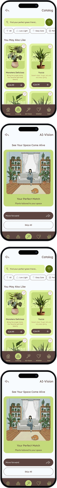
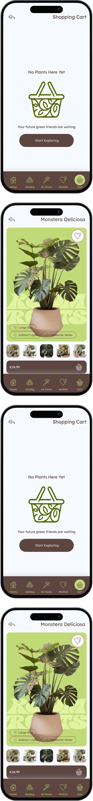
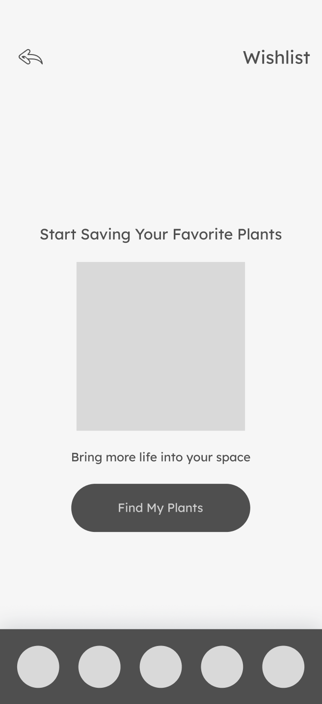

UX/UI-кейс
UX/UI-кейс
RoomRoots
ШІ-підбір рослин за освітленням, типом кімнати, складністю догляду й тваринами
Мобільний e-commerce застосунок рівня MVP, який допомагає обирати й купувати рослини з урахуванням простору, освітлення, досвіду догляду та вподобань. Персональні рекомендації та AI-Vision зменшують невизначеність і ведуть від пошуку до оформлення замовлення.
 Тип проєктуКонцепт MVP
Тип проєктуКонцепт MVP ПлатформаМобільний застосунок
ПлатформаМобільний застосунок РольUX/UI-дизайнерка
РольUX/UI-дизайнерка ОбсягВід дослідження до MVP
ОбсягВід дослідження до MVP

 Проєкт у цифрах
Проєкт у цифрах
- 25–40вік основної аудиторії
- 4ключові бар’єри
- 4критерії підбору
- 6основні функції MVP
- 4user flow
- 27компонентів




 01 · Проблема
01 · Проблема
Багато рослин, жодних підказок
Ринок рослин росте і вибір великий, але більшість магазинів показує всім однаковий каталог і не зважає на умови покупця. Найбільше від цього страждають новачки: вони помиляються й втрачають інтерес до покупок.
Три питання, на які покупець не має відповіді
Чи впораюся я з доглядом?
Чи пасуватиме вона моєму простору?
Чи вистачить у кімнаті світла?
Чотири бар’єри до покупки
-
01
Брак персоналізації
Освітлення, тип кімнати й рівень досвіду не враховуються. Усі бачать однаковий каталог.
-
02
Забагато варіантів
Широкий вибір ускладнює рішення: люди губляться серед варіантів.
-
03
Немає підказок у контексті
Ніщо не пояснює, яка рослина підійде саме цьому простору. Рішення лишається за покупцем.
-
04
Страх помилитися
Рослини, що вже загинули, лякають людей купувати знову, тож вони взагалі уникають вибору.
 02 · Дослідження
02 · Дослідження
Що показало дослідження
Головна проблема не в браку вибору, а в браку впевненості. Користувачам потрібно менше, але релевантніших варіантів і зрозумілі підказки, прив’язані до їхнього простору, досвіду догляду й щоденних умов.
Цільова аудиторія
- Вік і житло
- 25–40живуть у квартирах або будинках
- Три типи покупців
- Новачки без досвіду
- Люди з базовими знаннями
- Люди, які створюють інтер’єри
- Спільна мотивація
- Незалежно від досвіду, вони хочуть рослину, яка пасує до інтер’єру, підходить умовам кімнати й не потребує складного догляду.
Вони хочуть бути певними, що рослина виживе й гарно виглядатиме.
Основа дослідження
- 1
Аналіз контексту
Ринок рослин, що росте, і каталоги, які не зважають на умови покупця.
- 2
Цільова аудиторія
Люди віком 25–40 років у квартирах або будинках, від новачків до дизайнерів інтер’єру.
- 3
Персона
Анна, 29, офіс-менеджерка в Кельні, у якої вже гинули рослини.
- 4
Сценарій користувача
Від кімнати, що після роботи здається порожньою, до оформленого замовлення.
 03 · Користувачі
03 · Користувачі
Для кого я проєктувала
Персона й сценарій користувача: Анна хоче рослину, яка зробить квартиру затишнішою і виживе в її умовах.
Персона
 Портрет створено за допомогою ШІ
Портрет створено за допомогою ШІБольові точки
- Не розумію, які рослини підходять під освітлення
- У мене вже швидко гинули рослини
- Важко заздалегідь оцінити складність догляду
- Боюся знову помилитися з вибором
Потреби
- Прості рекомендації під мої умови
- Зрозумілі інструкції з догляду
- Певність, що рослина не загине
- Уявлення, як вона виглядатиме вдома
Цілі
- Зробити інтер’єр затишнішим
- Додати простору «життя»
- Обрати рослину без помилок
- Знайти рішення без складного догляду
«Я живу в квартирі й працюю в офісі. Мені важливо, щоб удома було затишно й красиво, особливо після робочого дня. Я часто зберігаю ідеї інтер’єру в Pinterest і хочу, щоб мій простір виглядав так само охайно й стильно. Я вже купувала рослини, але не завжди знаю, які підійдуть до моїх умов.»
Сценарій користувача
Словами Анни, переклад з російської
Після роботи я помічаю, що моя кімната виглядає порожньою й не дуже затишною. Хочу додати рослину, але не знаю, яка підійде до моїх умов.
Рослини, які я купувала раніше, швидко гинули. Цього разу хочу не помилитися й обрати надійний варіант.
- 1
Відкриває застосунок
щоб отримати рекомендацію, а не обирати навмання
- 2
Проходить короткий квіз
освітлення, тип кімнати, складність догляду й тварини
- 3
Отримує відповідні рослини
застосунок пропонує ті, що підходять
- 4
Переглядає картку товару
умови й опис з першого погляду
- 5
Додає в кошик
і оформлює замовлення
 04 · Обсяг MVP
04 · Обсяг MVP
MVP у шести функціях
Для MVP я залишила лише ключові функції, потрібні, щоб перевірити гіпотезу покупки.
- 01
Каталог
Перегляд доступних рослин з базовою інформацією та швидким вибором.
- 02
Картка товару
Усе про рослину: умови, догляд і рекомендації.
- 03
Кошик
Перевірити обрані рослини перед замовленням.
- 04
AI-Vision
Рослини, підібрані під умови користувача або під фото його простору.
- 05
Оформлення
Ввести дані й завершити покупку.
- 06
Підтвердження
Повідомлення, що замовлення пройшло, з його деталями.
 05 · User flow
05 · User flow
Від першого дотику до оформлення
Чотири flow описують увесь шлях покупки, від пошуку в каталозі та ШІ-підбору до персональних рекомендацій і оформлення, з ключовими взаємодіями й рішеннями на кожному етапі.
Функції MVP 01 · 02 · 03
Після запуску застосунку користувач вмикає фільтр Medium Light, обирає Monstera Deliciosa у відфільтрованому каталозі, додає її в кошик і повертається на головний екран.
Екрани: вхід у застосунок · головна · фільтри · каталог · сторінка товару
- СтартЗапуск застосунку
- ЕкранГоловний екран
- ДіяУвімкнути фільтр «Medium Light»
- ЕкранВідфільтрований каталог
- ДіяОбрати «Monstera Deliciosa»
- ЕкранСторінка товару
- ДіяДодати в кошик
- Повернення
 Головний екран
Головний екран
- Повернення
Функція MVP 04 · AI-Vision
Від банера AI-Vision на головному екрані через онбординг і квіз до фото кімнати. Якщо фото не підходить, користувач повертається на екран завантаження; якщо підходить, ШІ його обробляє.
Екрани: головна · AI-Vision · онбординг · квіз · завантаження фото · завантаження
- ЕкранГоловний екран
- ДіяПрокрутити до банера ШІ
- ЕкранБанер AI-Vision
- ДіяНатиснути «Get My Match»
- ЕкранЕкрани онбордингу
- ДіяПройти квіз
- ЕкранЕкран завантаження фото
- ДіяЗавантажити фото кімнати
- РішенняФото підходить?
- ТАКСистема: обробка ШІ
- НІНазад до екрана завантаження фото
- ТАК
- СистемаСистема: обробка ШІДалі: 03 · Рекомендації
Функції MVP 04 · 02 · 03
Два паралельні шляхи від результатів ШІ: обрати Fiddle Leaf Fig або Bird of Paradise, відкрити сторінку товару й додати в кошик. Звідти користувач повертається до результатів або переходить у кошик через панель навігації.
Екрани: рекомендації ШІ · сторінки товарів
- ЕкранВізуалізація результатів ШІ
- Вибір«Fiddle Leaf Fig»
- Вибір«Bird of Paradise»
- Вибір
- ДіяОбрати «Fiddle Leaf Fig»
- ЕкранСторінка товару
- ДіяДодати в кошик
- Наступний крокНатиснути на панель навігації
- ПоверненняВізуалізація результатів ШІ
- Наступний крок
- ДіяОбрати «Bird of Paradise»
- ЕкранСторінка товару
- ДіяДодати в кошик
- Наступний крокНатиснути на панель навігації
- ПоверненняВізуалізація результатів ШІ
- Наступний крок
- ДіяНатиснути на панель навігаціїДалі: 04 · Оформлення
Функції MVP 03 · 05 · 06
Від панелі навігації до кошика, де свайп видаляє Monstera Deliciosa, через форму доставки з «Use App Data» і екран оплати до успішної оплати.
Екрани: кошик · доставка · оплата · оплата успішна
- ДіяНатиснути на панель навігації
- ЕкранКошик
- ДіяСвайпом видалити «Monstera Deliciosa»
- ЕкранОновлений кошик
- ЕкранФорма доставки
- ДіяУвімкнути «Use App Data»
- ЕкранЕкран оплати
- ДіяНатиснути «Pay»
- КінецьОплата успішна
Вайрфрейми





 06 · UI-кіт
06 · UI-кіт
UI-кіт і hi-fi прототип
Ключові компоненти з більшого UI-кіту: колір, типографіка, іконки, кнопки й картки товарів.
- 27компонентів із варіантами
- 21кольорів у палітрі, 17 з назвами: основні зелені, нейтральні, помилка, успіх, білий
- 8текстових стилів, один шрифт: Lexend
- 2стилі кнопок: primary і secondary
- 5розділів у таббарі ГоловнаКаталогAI-VisionСписок бажаньКошик
- Hi-fi прототипу Figma, з анімованою каруселлю онбордингу та кошиком
- Картка товаруфото, назва, короткий рядок, ціна, «у кошик» і сердечко для списку бажань
- Іконкиодин лінійний стиль у кількох розмірах
- Чипи фільтрівLow Light, Easy Care, Pet Friendly
- Відгукикартки відгуків з оцінкою від однієї до п’яти зірок
Усередині UI-кіту
Перетягуйте фрейми


 07 · Результат
07 · Результат
Висновки проєкту
MVP зосереджений на тому, щоб зробити вибір простішим і менш тривожним.
Проєкт коротко
- 01 · ПроблемаВпевненість
Покупцям потрібно менше, але краще підібраних рослин і зрозумілі поради з догляду.
- 02 · РішенняRoomRoots
Короткий квіз і AI-Vision звужують каталог за освітленням, умовами в кімнаті, досвідом догляду й тваринами.
- 03 · MVP6
основних функцій на одному UI-кіті, від каталогу до підтвердження замовлення, у hi-fi прототипі.
Чотири висновки
Увесь шлях від першого дотику до оплаченого замовлення описано й прототиповано, а один UI-кіт тримає інтерфейс узгодженим, щоб він міг рости разом із продуктом.
RoomRoots перетворює купівлю рослин на простий, персональний і впевнений досвід.
- 01
Простота дає впевненість
- 02
Персоналізація робить вибір релевантним
- 03
Контекст допомагає ухвалювати кращі рішення
- 04
Зрозумілий флоу зміцнює довіру


 Живу в Гахенбурзі, Німеччина
Живу в Гахенбурзі, Німеччина
Проєктуймо для реальних потреб
Шукаю роботу UX/UI-дизайнерки в Німеччині. Напишіть мені на email, зателефонуйте або напишіть у LinkedIn чи Telegram.